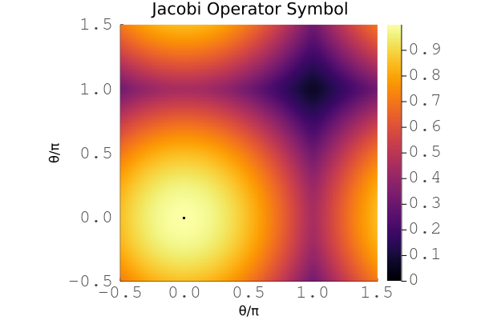

Preconditioner: Jacobi
This smoother provides Jacobi smoothing based on the operator diagonal.
Example
This is an example of a simple Jacobi smoother.
# ------------------------------------------------------------------------------
# Jacobi smoother example
# ------------------------------------------------------------------------------
using LFAToolkit
using LinearAlgebra
# setup
mesh = Mesh2D(1.0, 1.0)
p = 3
# diffusion operator
diffusion = GalleryOperator("diffusion", p + 1, p + 1, mesh)
# Jacobi smoother
jacobi = Jacobi(diffusion)
# compute operator symbols
A = computesymbols(jacobi, [1.0], [π, π])
eigenvalues = real(eigvals(A))
# ------------------------------------------------------------------------------

Plot for the symbol of a Jacobi smoother for the 2D scalar diffusion problem with cubic basis.
Documentation
LFAToolkit.Jacobi — TypeJacobi(operator)Jacobi diagonal preconditioner for finite element operators
Arguments:
operator::Operator: finite element operator to precondition
Returns:
- Jacobi preconditioner object
Example:
# setup
mesh = Mesh2D(1.0, 1.0);
mass = GalleryOperator("mass", 4, 4, mesh);
# preconditioner
jacobi = Jacobi(mass);
# verify
println(jacobi)
println(jacobi.operator)
# output
jacobi preconditioner
finite element operator:
2d mesh:
dx: 1.0
dy: 1.0
2 inputs:
operator field:
tensor product basis:
numbernodes1d: 4
numberquadraturepoints1d: 4
numbercomponents: 1
dimension: 2
evaluation mode:
interpolation
operator field:
tensor product basis:
numbernodes1d: 4
numberquadraturepoints1d: 4
numbercomponents: 1
dimension: 2
evaluation mode:
quadratureweights
1 output:
operator field:
tensor product basis:
numbernodes1d: 4
numberquadraturepoints1d: 4
numbercomponents: 1
dimension: 2
evaluation mode:
interpolationLFAToolkit.computesymbols — Methodcomputesymbols(jacobi, ω, θ)Compute or retrieve the symbol matrix for a Jacobi preconditioned operator
Arguments:
jacobi::Jacobi: Jacobi preconditioner to compute symbol matrix forω::Array{Real}: smoothing weighting factor arrayθ::Array{Real}: Fourier mode frequency array (one frequency per dimension)
Returns:
- symbol matrix for the Jacobi preconditioned operator
Example:
using LinearAlgebra
for dimension = 1:3
# setup
mesh = []
if dimension == 1
mesh = Mesh1D(1.0)
elseif dimension == 2
mesh = Mesh2D(1.0, 1.0)
elseif dimension == 3
mesh = Mesh3D(1.0, 1.0, 1.0)
end
diffusion = GalleryOperator("diffusion", 3, 3, mesh)
# preconditioner
jacobi = Jacobi(diffusion)
# compute symbols
A = computesymbols(jacobi, [1.0], π * ones(dimension))
# verify
eigenvalues = real(eigvals(A))
if dimension == 1
@assert maximum(eigenvalues) ≈ 1 / 7
elseif dimension == 2
@assert minimum(eigenvalues) ≈ -1 / 14
elseif dimension == 3
@assert minimum(eigenvalues) ≈ -0.33928571428571486
end
end
# output